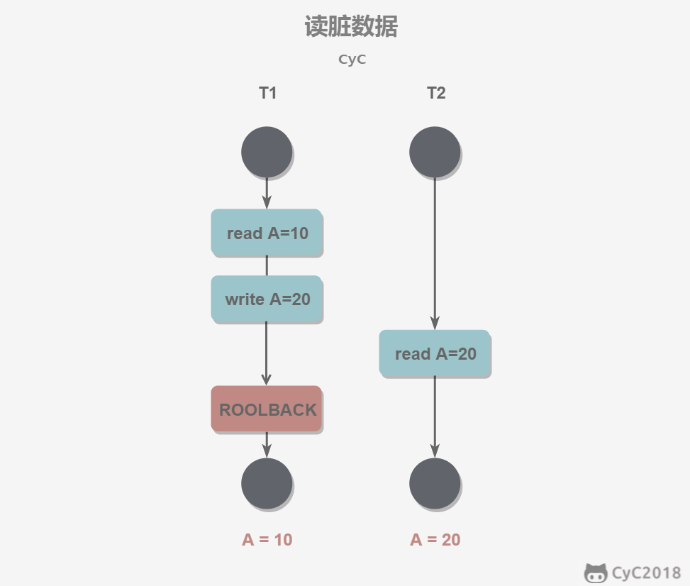

锁概述
读写锁
读锁：读锁是共享锁（S Lock）。多个用户在同一时刻可同时读取同一资源，互不干扰。
写锁：写锁是排他锁（X Lock）。一个写锁会阻塞其他的写请求和读请求。写锁的优先级高于读锁，因此一个写请求可能会被插入到读请求队列的前面，反之则不行。
锁粒度
应该尽量只锁定需要修改的那部分数据，而不是所有的资源。锁定的数据量越少，发生锁争用的可能就越小，系统的并发程度就越高。
但是加锁需要消耗资源，锁的各种操作（包括获取锁、释放锁、以及检查锁状态）都会增加系统开销。因此封锁粒度越小，系统开销就越大。
在选择封锁粒度时，需要在锁开销和并发程度之间做一个权衡。
MySQL的Server层中实现了表锁，而存储引擎层则部分支持行锁（如InnoDB和XtraDB，行锁又分为S锁和X锁），部分支持表锁。
意向锁
InnoDB存储引擎支持多粒度锁定，它允许事务在行级上的锁和在表级上的锁上同时存在，由此引发一个问题：假如现有事务T₁对某表中的一行添加了行级S锁，与此同时事务T₂申请该表的表级X锁，显然T₁持有的S锁与T₂申请的锁冲突，那么T₂如何知道这个冲突呢？如果采用遍历整张表的每一行来查看是否某行有锁存在，显然得不偿失。
因此，为了支持多粒度加锁操作，InnoDB支持表级别的意向锁（Intention Lock）：
- 意向共享锁（IS Lock）：事务想要获得一张表中某几行的共享锁。
- 意向排他锁（IX Lock）：事务想要获得一张表中某几行的排他锁。
如果事务需要对行记录X加锁，那么它应先对行所在的表加意向锁IX，如果该表已有锁存在，那么该事务需要等待。
回到开始的问题，事务T₁对表某行添加了行级S锁，那么必须先添加表级IS锁，事务T₂申请表级X锁，由于不兼容，因此需要等待。
InnoDB存储引擎中锁的兼容性如下表所示：
| T₁/T₂ | IS | IX | S | X |
|---|---|---|---|---|
| IS | Y | Y | Y | |
| IX | Y | Y | ||
| S | Y | Y | ||
| X |
悲观锁和乐观锁
悲观锁
悲观锁对数据被外界修改持悲观态度，因此，在整个数据处理过程中，将数据处于锁定状态。读取数据时需要一致性锁定读，其它事务无法修改这些数据。修改删除数据时也要加锁，其它事务无法读取这些数据。
乐观锁
相对悲观锁而言，乐观锁机制采取了更加宽松的加锁机制。悲观锁大多数情况下依靠数据库的锁机制实现，以保证操作最大程度的独占性。但随之而来的就是数据库性能的大量开销，特别是对长事务而言，这样的开销往往无法承受。
而乐观锁机制在一定程度上解决了这个问题，InnoDB中乐观锁通过一致性非锁定读实现。注意，乐观锁机制并不是真的锁。
查看MySQL中的锁信息
可通过命令SHOW ENGINE INNODB STATUS;以及information_schema架构下的INNODB_TRX、INNODB_LOCKS、INNODB_LOCK_WAITS来观察锁的信息。
并发一致性问题
丢失修改
事务T₁修改数据后还未提交，事务T₂覆盖数据，两个事务依次提交，则T₁的修改丢失了。只有串行化执行事务才能避免丢失修改（最高的隔离级别或手动加写锁（即for update））。

脏读
脏读是指一个事务读取了另一个事务未提交的数据。事务T₁修改一个数据但未提交，事务T₂随后读取这个数据。如果T₁撤销了这次修改，那么T₂读取的数据是脏数据。

不可重复读
不可重复读是指在一个事务内多次执行相同的查询得到的结果不一致。事务T₂读取一个数据，事务T₁对该数据做了修改。如果T₂再次读取这个数据，此时读取的结果和第一次读取的数据不一致。

InnoDB存储引擎中的锁
一致性非锁定读
一致性非锁定读（consistent nonlocking read）（又叫快照读）指InndoDB存储引擎通过多版本并发控制（Multi Version Concurrency Control）的方式来读取行数据。
举例：如果事务T₁正在对某行执行写操作，该行上有X锁，此时事务T₂要读取该行数据，那么T₂并不会等待T₁释放锁，而是读取该行的一个快照数据。如图所示：
快照数据是指该行之前版本的数据，通过undo段（undo segment，位于共享表空间内）实现。undo段用于在事务中回滚数据，因此快照数据本身没有额外的开销。此外，读取快照数据是不需要上锁的，因为没有事务需要对历史数据进行修改操作。
InnoDB存储引擎在READ COMMITTED和REPEATABLE READ隔离级别下都是采用一致性非锁定读实现。然而它们读取的快照数据版本是不同的：
- READ COMMITTED：若T₁被锁定行提交，T₂读取被锁定行的最新一份快照数据。
- REPEATABLE READ：若T₁被锁定行提交，T₂读取当前事务开始时的行数据版本。
一致性锁定读
在数据逻辑一致性要求较高时，用户需要显式地对数据库读取操作加锁。InnoDB对于SELECT语句支持两种一致性锁定读（locking read）操作：
SELECT...FOR UPDATE;：对读取的行记录加一个X锁（悲观锁）。SELECT...LOCK IN SHARE MODE;：对读取的行记录加一个S锁（悲观锁）。
注意以上两个语句必须要在事务中，因此务必使用BEGIN、START TRANSACTION或SET AUTOCOMMIT=0。
加行锁的3种算法
- Record Lock：锁定单个行记录，通过锁定索引（一般为主键）实现。在RC隔离级别下，InnoDB采用Record Lock。
- Gap Lock：间隙锁，锁定一个范围，但不包含记录本身。
- Next-Key Lock：Record Lock+Gap Lock，锁定一个范围，并且锁定记录本身。当查询的列是唯一索引时，InnoDB不再采用Next-Key Lock而是Record Lock。
创建表：
1 | CREATE TABLE z(a INT, b INT, PRIMARY KEY(a), KEY(b)); -- a是唯一索引，b是非唯一索引 |
在会话A中进行事务T₁：
1 | BEGIN; |
在会话B中：
1 | SELECT * FROM z WHERE a=5 LOCK IN SHARE MODE; --对5,3这一行加一个S锁 |
结果为阻塞：
1 | INSERT INTO z SELECT 6,1; |
结果为阻塞：
1 | INSERT INTO z SELECT 6,6; |
结果为阻塞：
1 | INSERT INTO z SELECT 6,7; |
可正常插入：
由此实验可见，对于唯一索引，Next-Key Locking降级为Record Lock，本例中只锁定a=5；对于非唯一索引，则锁定一个范围，本例中锁定b的闭区间为[1,6]。
幻读问题在InnoDB中是如何解决的？
所谓幻读，指的是当事务A在读取某个范围的记录时，事务B又在该范围内插入或删除了一条记录，事务A再次读取该范围的记录时出现了幻行。幻读问题示例：
对于上述示例而言，在事务T₁中，假如将隔离级别改为RC：SET SESSION tx_isolation='READ-COMMITTED;'，然后执行：
1 | BEGIN; |
在另一会话中执行INSERT INTO z SELECT 11,11;，那么显然可以插入成功，此时再次在事务T₁中执行SELECT * FROM z WHERE b>3 LOCK IN SHARE MODE;，返回的结果比第一次多了一行数据(11,11)，这就是幻读问题（也是不可重复读问题）。而若隔离级别为RR，对于b而言锁定的是[3,+∞]，在另一个事务中根本无法插入数据。
InnoDB的RC和RR隔离级别都通过一致性非锁定读（乐观锁机制）实现，RR是InnoDB的默认隔离级别。
在RC级别下，由于事务读的是最新版本的快照版本，有不可重复读和幻读问题。若改用悲观锁，由于RC级别采用Record Lock算法，因此只能解决读取一行情况下的不可重复读问题，若是读取多行依然会前后不一致，即不可重复读问题。至于幻读问题更是无法解决了。
在RR级别下，事务A读取数据行DATA，其他事务可以修改行DATA，但事务A读的是其自身开始时行DATA的快照版本，不会有不可重复读问题和幻读问题。若改用悲观锁，那么数据的一致性比使用乐观锁时更高，由于采用Next-Key Lock算法锁住了DATA及其周围的数据，其它事务甚至根本不能修改DATA及其范围内的数据而会被阻塞，更不会有不可重复读和幻读问题了。
总结来说，InnoDB默认使用乐观锁机制，通过多版本并发控制（MVCC）解决了幻读问题；而人为使用悲观锁时，通过Next-Key Lock算法解决了幻读问题，并且相对乐观锁机制提高了数据一致性。
死锁
当多个事务在同一资源上相互占用，并请求锁定对方占用的资源时，产生死锁。例如如下两个事务同时处理stock_price表并同时执行完第一条更新语句：
1 | -- 事务1 |
死锁检测：超时机制，超时则回滚；等待图（wait-for graph）方式，InnoDB就采用这种方式。等待图是指：数据库保存锁的信息链表和事务等待链表，通过上述链表构造一张图，若存在回路就代表存在死锁。
死锁解决：死锁发生以后，只有部分或完全回滚其中一个事务才能打破死锁。InnoDB处理死锁的方法是，将持有最少行级排他锁的事务进行回滚。
参考
- http://www.cyc2018.xyz/
- MySQL技术内幕:InnoDB存储引擎[M].姜承尧著.北京:机械工业出版社,2013.6